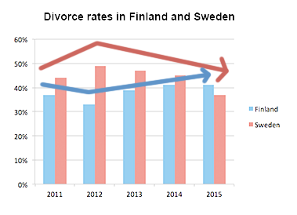

Answering IELTS writing task 1: bar chart
In this lesson we’re going to learn how to tackle bar charts in IELTS Writing task 1 questions to get the highest score. To get a band 9 in IELTS Writing task 1, you should follow this answer structure:
- Introduction
- General overview
- Specific features
Let’s look in detail how to apply this structure to an IELTS bar chart question.
IELTS bar chart Question:
The bar chart shows the divorce rates in two European countries from 2011 to 2015.
Summarise the information by selecting and reporting the main features, and make comparisons where relevant.

You can watch a video tutorial on how to describe bar charts in IELTS Academic Writing task 1:
And now let's learn how to answer IELTS bar chart questions.
IELTS bar chart answering strategy:
1. Introduction
You should start your answer by writing an introduction. The introduction is 1 or 2 sentences, where you paraphrase the information from your question. You should mention two things in your introduction:
- what your graph shows
- for what period of time
In our example, the introduction can look like this:
The bar chart provides information about the percentages of divorces in Finland and Sweden between 2011 and 2015.
See how I used synonyms to paraphrase the question:
shows → provides information about
divorce rates → percentages of divorces
two European countries → Finland and Sweden (it’s good to be more specific)
from 2011 to 2015 → between 2011 and 2015.
2. General Overview
The second paragraph of your answer is a general overview, where you briefly describe major trends on your graph. Ideally, you should describe 2-4 key features.
To make major trends easier to notice, you can outline Sweden’s bars and Finland’s bars like this:
Now it’s obvious that:
- Sweden experienced a downward trend
- Finland experienced an upward trend
- both countries showed fluctuations
- Initially Finland had a lower rate, but in 2015 Finland outraced Sweden
Use word overall to start your general overview. In our case, the overview may look as follows:
Overall, Sweden experienced a downward trend, while Finland showed an upward trend throughout the period. Both countries’ divorce rates had some fluctuations. Although Finland initially had a lower rate, it outraced Sweden at the end of the period.
3. Specific details
After we’ve written the introduction and general overview, it’s time to give the specific details. You should describe the specific features in 2 or 3 (sometimes more) paragraphs.
You can group data in such way:
- Details about Sweden
- Details about Finland
When you have two countries (or two cities or any other two things depicted on the graph), the simplest way of grouping data - is to describe each country’s trend in a separate paragraph.
When giving specific features, you have to write exact numbers/percentages and include as much details as you can.
In our case, the specific details may look as follows:
Sweden’s divorce rate was about 45% in 2011, being higher than Finland’s rate by approximately 8%. Then, it rose to almost fifty percent in 2012. However, the figure showed a gradual decrease to about 47% in 2013, and continued to decline steadily to the end of the period, reaching around 45% in 2014 and hitting a low-point of about 37% in 2015.
Percentage of divorces in Finland was less than 40% in 2011, and it decreased in 2012, when about one third of marriages in Finland ended with a divorce (as opposed to almost a half in Sweden). However, the figure experienced a steady growth during the next two years. It rose to approximately 39% in 2013, then increased by around 3% in 2014, and remained steady for the next year, outracing the rate of Sweden.
Tips:
- When analyzing a bar-chart, we cannot always give exact details (due to inaccuracies of the chart), so use words around, about and approximately when giving inexact data.
- Give data for each year shown on the chart
The full answer + Practice
It’s the end, we have finally written the answer for IELTS bar chart question. And now, let’s practice: fill in the gaps in this answer with appropriate words.
The provides about the percentages of divorces in Finland and Sweden between 2011 and 2015.
, Sweden experienced a downward trend, while Finland showed an trend throughout the period. Both countries’ divorce rates had some fluctuations. Although Finland initially had a lower rate, it Sweden at the end of the period.
Sweden’s divorce rate was about 45% in 2011, being higher than Finland’s rate by approximately 8%. Then, it rose to fifty percent in 2012. However, the figure showed a gradual decrease to about 47% in 2013, and continued to decline steadily to the end of the period, reaching around 45% in 2014 and hitting a of about 37% in 2015.
Percentage of divorces in Finland was than 40% in 2011, and it decreased in 2012, when about one third of marriages in Finland ended with a divorce (as to almost a half in Sweden). However, the figure experienced a steady growth during the next two years. It rose to approximately 39% in 2013, then increased by around 3% in 2014, and remained steady for the next year, outracing the rate of Sweden.
(190 words)